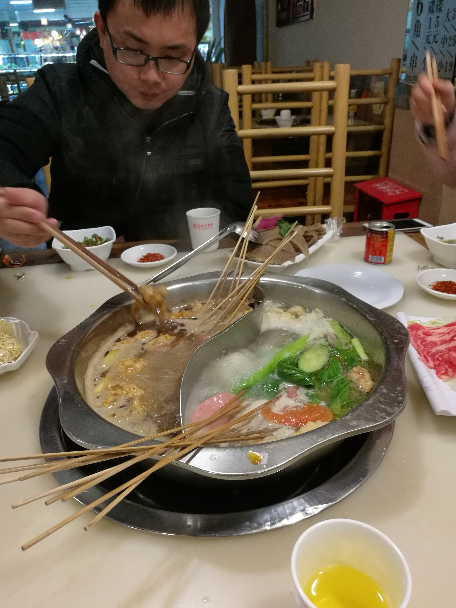
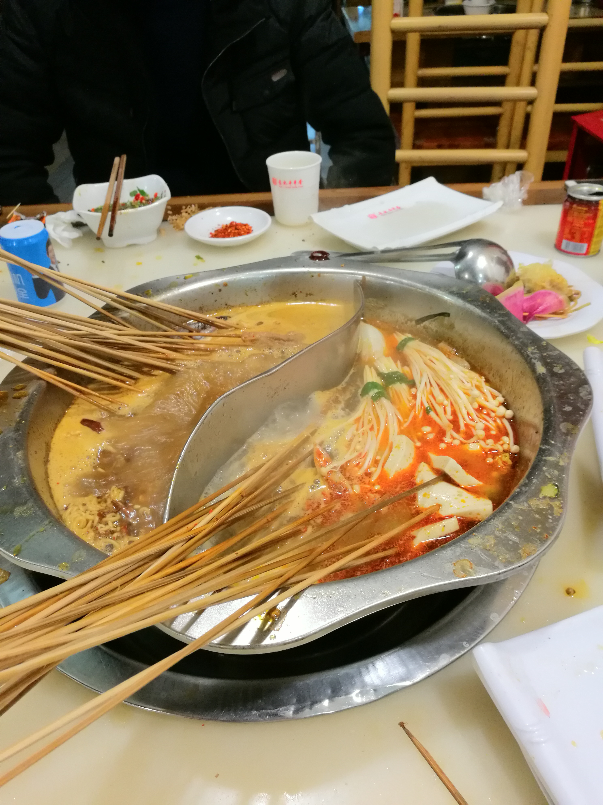
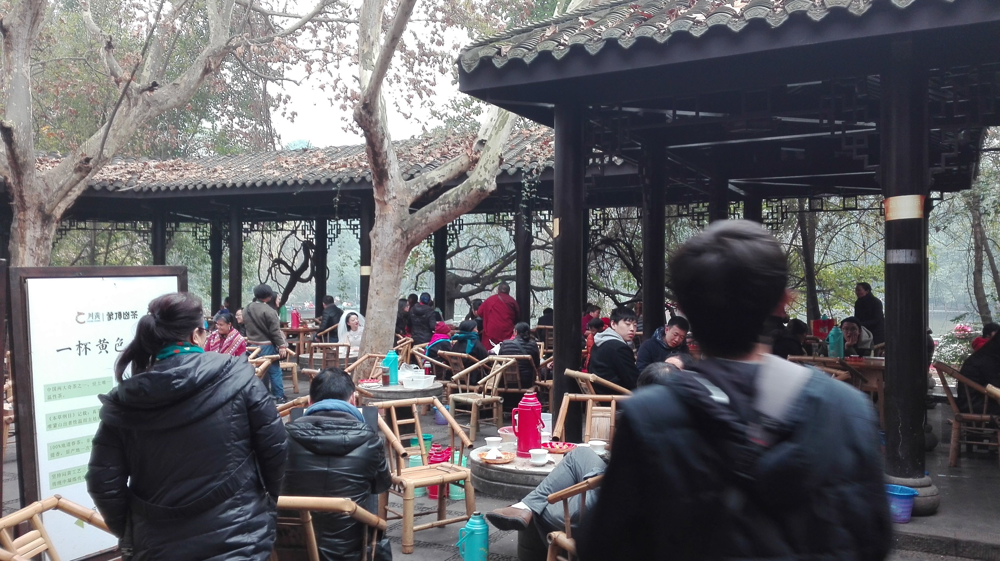
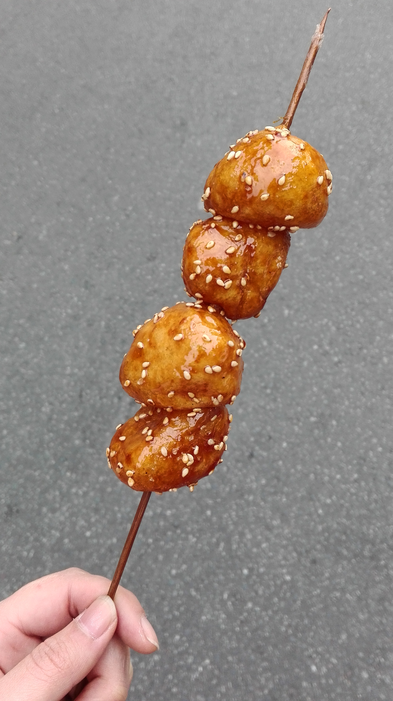

巴蜀之旅（二）
2017年的第一天顺利登陆成都。火锅串串大熊猫，我们来了~
话说在重庆跨年后，解放牌人山人海，滴滴根本叫不到车，真正的流落街头，还是异乡的街头，特别特别累特别特别困；当时
真的觉得自己脑子坏掉了，为什么不在自己的小床上睡成200斤的胖子。好在人多力量大，明目的璀璀发现了飞奔的黄色出租
车，
倍感亲切，爬上出租车，移动到火车站。凌晨5点的车去成都，空气是灰色的，好在好人有好报，竟有天使降临，幸运发
现一家麦当劳，老板娘真的是天使，开门让我们休息，几乎是躺椅子上就睡了，困到整个脑子是木的；好在相比与我，小翟翟
妈妈级的存在，定了闹铃，安置好小伙伴才睡的，那几个小时，睡得简直美翻天。走时候，老板娘蓬头垢面给我们开门（因为
门锁了）
老板娘特别美，整个人都是发光的！
好在要在成都呆两天，所以提前定了宾馆。终于不用背着大包包来回跑了，到宾馆本想睡一觉的，奈何脑子特别兴奋，集体睡
不着。于是决定出去觅食，第一顿当然是串串~~~秉承我们一贯的原则，想吃什么拿什么，吃能花多少钱。于是，我吃了一
身香油，吃的太认真太全神贯注，头发什么时候沾到香油都没发现，头发又长，在羽绒服上自己画起了山水画，我还是坚持到
了最后才去厕所清洗了一下，回去就剪短！

看小翟翟吃东西还是一副调代码的忧愁感，是觉得太不容易了吗？哈哈哈哈哈~

吃完饭，不是很累就走了走，很偶然走进一个公园，很多人在湖中划船，亭子里面喝茶嗑瓜子聊天，好不悠闲；总算体会到幸福指数第一的天府之国的惬意
现在是不行了，还要奋斗，还要敲代码，还要赚钱养活自己，去了这成都，怕是懒癌就后期无药可救了；待我老了，能在这里安居也是极好的。
然后，机缘巧合发现了熊猫邮局，当时赵雷的成都还没有火起来，我们也是在成都的街头走了走。熊猫邮局的人应该大部分是游客，各种类型的明信片，最重要的还是那个邮戳。
从邮局出来后，直接去了宽窄巷，有很多有特色的墙和雕刻，小吃，逛了逛，人很多；晚上找了一家餐馆吃川菜，点了宫保鸡丁、麻婆豆腐、红糖糍粑、鱼，不知道是不是太草率，没有感觉有太多差别
。不过，麻婆豆腐我很喜欢~真的是要累惨了！脚都不是自己的脚了，现在想想当时怎么坚持下来的，太励志了。终于走回了宾馆，可以睡觉了。
第二天醒来，准备去熊猫基地，也是我们最期待的行程。意外总是有，我和聪聪被困在了电梯里面，也是什么经验都有了。
第一次被困电梯啊，竟然没有像电视里那么慌张
佩服自己一下。我们坐车去熊猫基地，下车排队领票一系列，熊猫不愧为国宝，环境真好，好像变成一只卖萌为生的熊猫啊。熊猫基地很大，最好坐观光车，我们直接去看了小熊猫。
简直萌出天际，小短腿无敌可爱，会在树杈上睡觉，在地上滚来滚去，费大劲才能爬上几个台阶，一大群人围着它们看它们翻转睡觉，它们一点不害怕，可见每天都是这样，已经习惯了。
看着小小的熊猫太神奇，竟然可以这么可爱。看小熊猫就看了快一个小时；运气好，正好赶上大熊猫进食，原来熊猫这么聪明，会挑拣竹叶，选多的，然后把竹叶撸好多下来放手边，一把吃掉。
很多熊猫都是独居的，有一个熊猫特别喜欢在特别高的树上睡觉，怪不得那么胖，睡太多啦；还有孔雀、小浣熊很多平常见不到的动物，都很可爱；还有一个熊猫幼稚园，工作人员太有心。
出来后，去了麻辣空间吃火锅。店里环境很好，还送了布丁，布丁很好吃，火锅更好吃。在街边老奶奶那里买了油炸的糍粑球，热热的，没吃过的小吃，成都特有的。
临走前，不甘心，又找了一家冒菜去吃，三顾冒菜。去火车站的路上碰到一个阿姨卖水果，想买点火车上吃，问阿姨柚子多少钱一斤，阿姨说的不太清楚，我问是X块吗？阿姨笑得不能自己，笑容特别
感染人，我被逗乐了，笑得肚子疼；好像旅游了一趟笑点变得无比的低，脑子也忘在西安了。稀里糊涂的我们，二二的旅途。真的很开心。最明显的就是回来后，特别想吃东西。
成都 再约
<<< 巴蜀之旅（一）